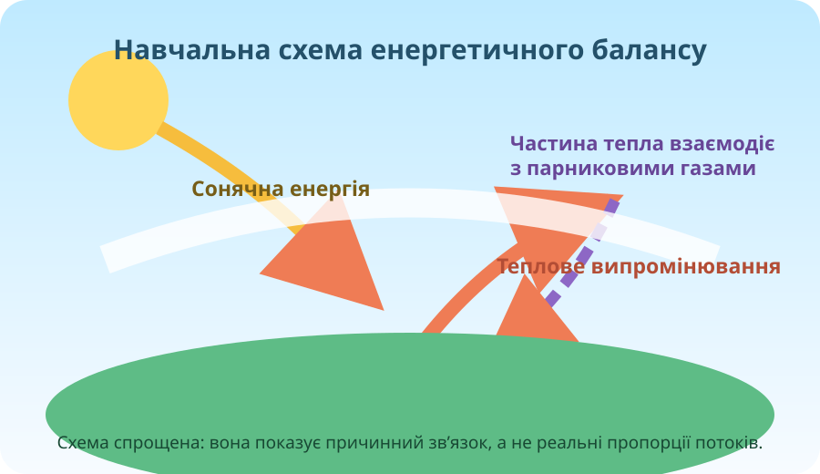

1. Атмосфера реагує
Люди змінюють склад повітря викидами газів і аерозолів, а землекористування впливає на обмін енергією, водою та вуглецем.
Чи можемо ми користуватися енергією, вирощувати їжу й розвивати міста так, щоб менше змінювати атмосферу?

Спочатку не читайте теорію. Подивіться на три реальні зображення й визначте, що є спостереженням, а що — вже поясненням.


Твердження: «Якщо на супутниковому знімку видно дим, це доводить глобальне потепління».

Перетягніть повзунок. Це навчальна модель, а не прогноз температури.
Ні. Природний парниковий ефект робить Землю значно теплішою й придатнішою для життя. Проблема — посилення цього ефекту через додаткові викиди парникових газів.
Розподіліть 100 умовних одиниць виробництва електроенергії. Мета: зменшити модельний вуглецевий слід, але не покладатися на одне джерело. Бали тут відносні й навчальні.
Чи однаково доцільно ставити вітротурбіни будь-де? Подивіться на просторові відмінності швидкості вітру.
Copernicus повідомив для 2025 року глобальну концентрацію CO₂ близько 425,6 ppm. Візьмемо для порівняння 2019 рік — 410,5 ppm. Обчисліть зміну.
Натискайте картки: класифікація з’явиться тут.
Умова: господарство хоче продовжити сезон вирощування овочів у закритому ґрунті й частково забезпечити себе енергією. Виберіть найбільш доказове рішення.
Люди змінюють склад повітря викидами газів і аерозолів, а землекористування впливає на обмін енергією, водою та вуглецем.
Він утримує частину тепла біля поверхні. Додаткові парникові гази посилюють утримання тепла.
Окремий холодний день не заперечує довготривалу зміну клімату. Для кліматичних висновків потрібні довгі ряди даних.
Сонячна й вітрова енергетика потребують оцінки ресурсу, мережі, площі, екологічних обмежень і способів балансування.
Опрацюйте §35. Оберіть один об’єкт удома або в школі, який споживає енергію. Запишіть: потреба → джерело енергії → можливий спосіб зменшити витрати → доказ, чому це працюватиме.
📘 Електронний підручник / ВШО ↗Тест відкриється лише після заповнення даних учня.